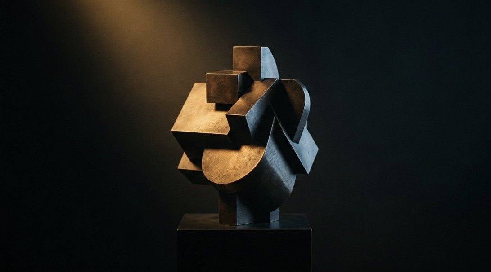
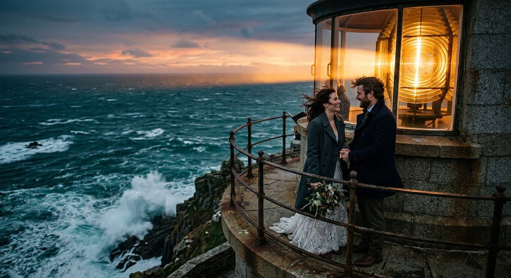

ATLAS · À la recherche du temps créé
Voir
l’invisible
Vingt-cinq ans de fragments. Une grille pour les relier.
Trois espaces

AccueilComprendreLe Cube, la mémoire, les fragments.
ChronologieExplorerSaint-Luc, les œuvres, les preuves, 1999 – 2026. CompositionCréerLa grille, les blocs, les relations, les recettes.Les archives
Saint-Luc
Six années de formation, à Tournai. Le carré, le cube, la mosaïque, l’image en mouvement.

Du fragment
à la composition
- Un fragmentUne idée, une application, une archive.
- Un blocLes fragments d’une même famille.
- Une compositionLes blocs reliés, sur la grille.
Métamorphose
Essayez
Deux vrais modules, reliés. Posez un moment dans la Timeline : il s’allume dans l’Agenda.
Chronologie
Chaque date
a sa preuve
Le carré, le cercle et le Point
Le carréATLAS · la grille rassemble ce qui a été créé. Le cercle.0NE · le Disque fait tourner les univers. Ouvrir .0NE ↗ Le PointAIME · tout part d’un point.- Les archives racontent.
- Les fragments composent.
- Les relations transforment.
- La grille rassemble.
« Pendant vingt-cinq ans, j’ai créé des fragments. Aujourd’hui, j’ai trouvé comment les relier. »